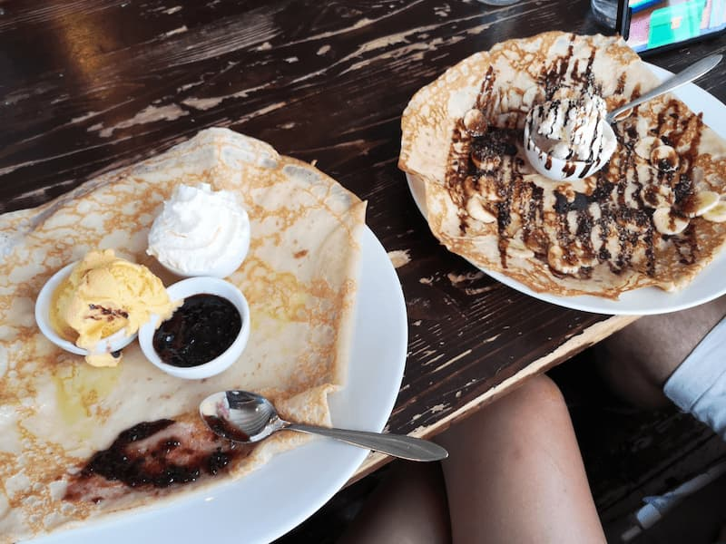

One of my favorite places in Sweden is a city that is also very isolated from the larger cities. The island is called Gotland, and it has a special town there called Visby. What I like most about the city are the walls that surround it.
It is also very safe to visit with children
and to preserve Swedish tradition, they serve delicious pancakes with jams made from berries that grow only on that island—a real delight.

There are many entertainment places for children, and above all, you fall in love with its beaches. A beautiful experience.